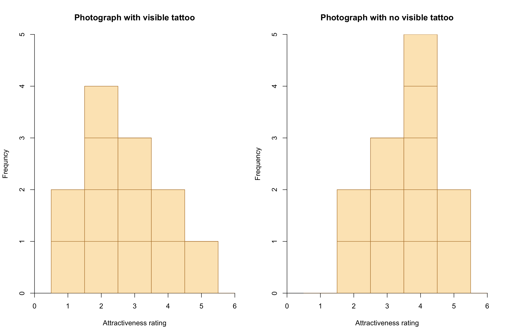
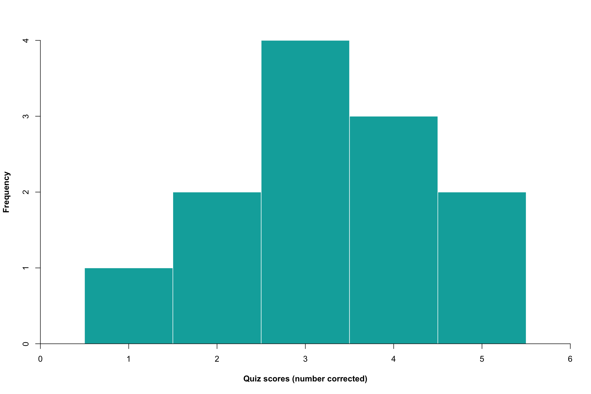
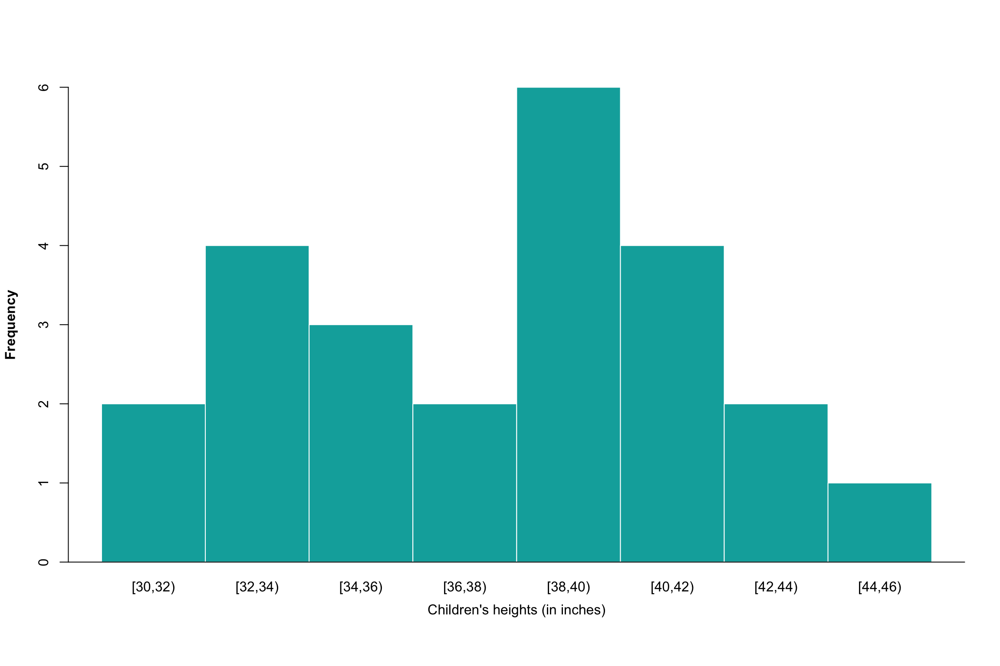
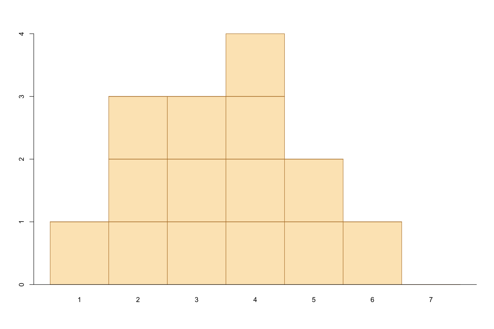
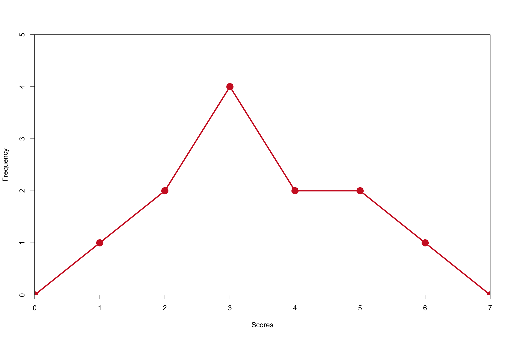
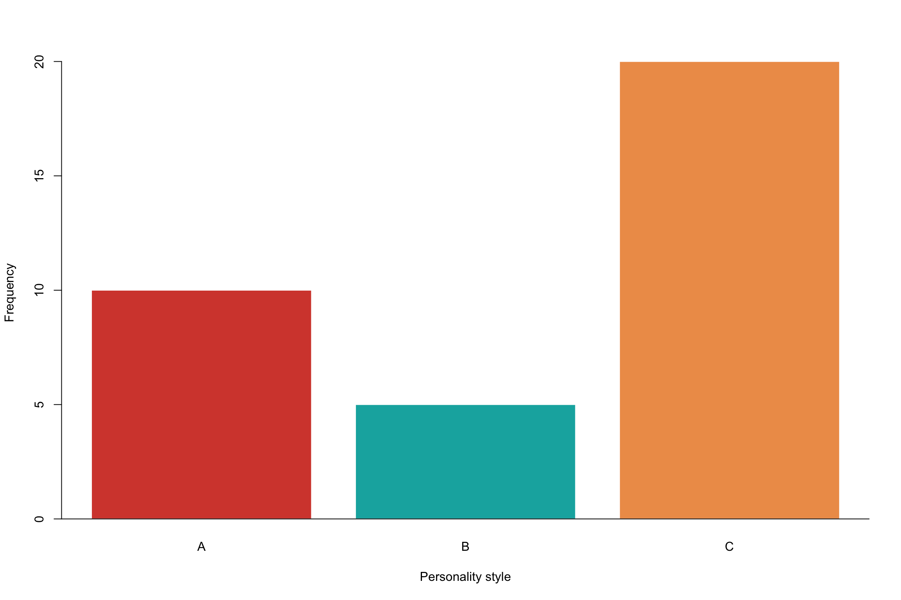
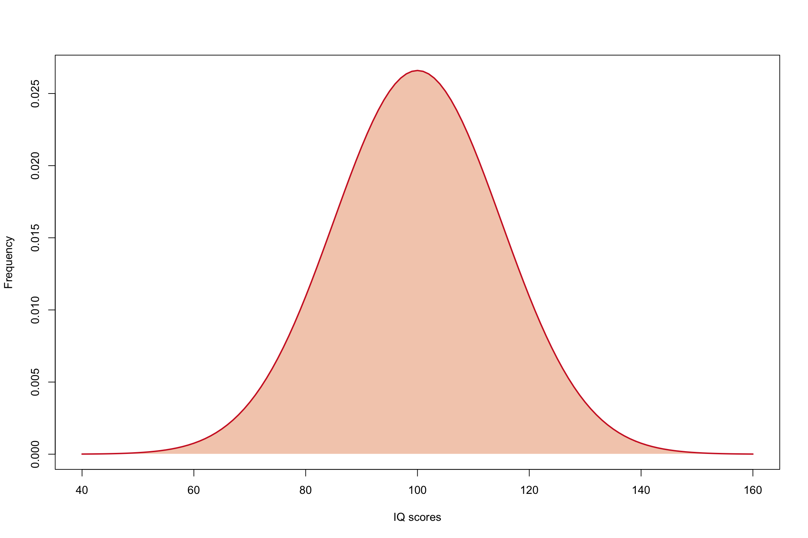
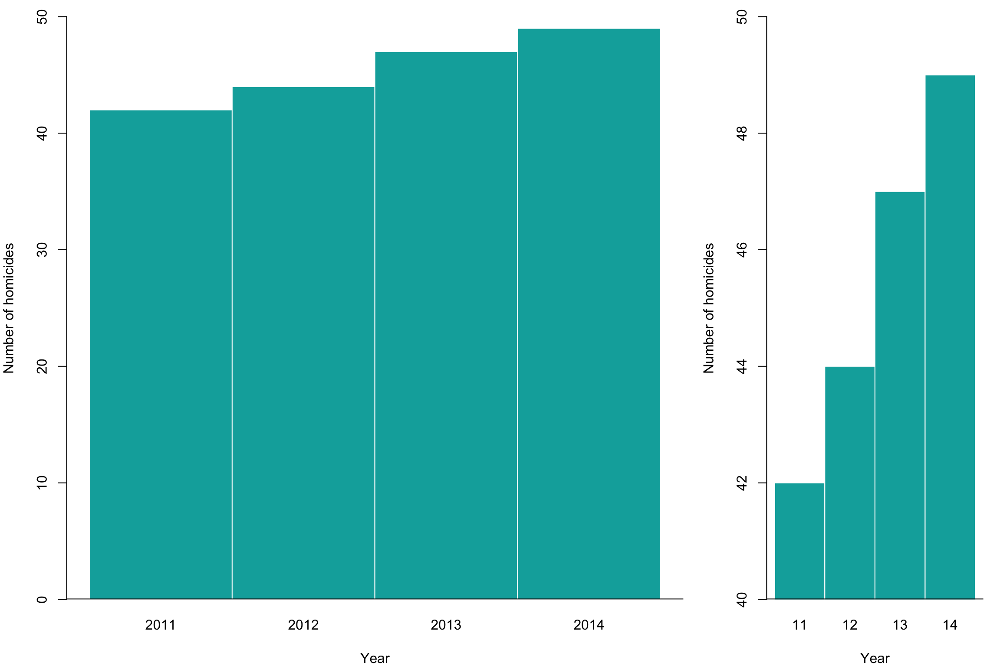

1. Figure 2.1
- Tattoo and Attractiveness rating
Tattoo <- c(1, 2, 4, 3,
2, 2, 1, 3,
2, 5, 4, 3)
Notatt <- c(2, 4, 4, 3,
5, 4, 2, 4,
4, 5, 3, 3)- Figure 2.1
par(mfrow = c(1, 2))
hist(Tattoo,
breaks = 0.5:6.5,
col = "#fce6bf",
border = "#b78135",
xlim = c(0, 6),
ylim = c(0, 5),
yaxs = "i",
xaxs = "i",
ylab = "Frequncy",
xlab = "Attractiveness rating",
main = "Photograph with visible tattoo")
segments(c(0.5, 0.5, 1.5),
c(1, 2, 3),
c(5.5, 4.5, 3.5),
c(1, 2, 3),
col = "#b78135"
)
hist(Notatt,
breaks = 0.5:6.5,
col = "#fce6bf",
border = "#b78135",
xlim = c(0, 6),
ylim = c(0, 5),
yaxs = "i",
xaxs = "i",
ylab = "Frequency",
xlab = "Attractiveness rating",
main = "Photograph with no visible tattoo")
segments(c(1.5, 1.5, 2.5, 3.5),
c(1, 2, 3, 4 ),
c(5.5, 5.5, 4.5, 4.5),
c(1, 2, 3, 4),
col = "#b78135"
)
2. Figure 2.2
data <- c(5, 5, 4, 4, 4, 3, 3, 3, 3, 2, 2, 1)
hist(data,
xlim = c(0, 6),
breaks = 0.5:5.5,
col = "#00acaa",
yaxs = "i",
xaxs = "i",
border = "white",
ylab = "Frequency",
xlab = "Quiz scores (number corrected)",
main = NULL,
font.lab = 2,
axes = FALSE
)
axis(1)
axis(2)
3. Figure 2.3
height <- c(44.5, 42.2, 42.8, 40.1, 40.2, 40.3, 40.4, 38.4,
38.5, 38.6, 38.7, 38.8, 38.9, 36.6, 36.8, 34.2,
34.3, 34.5, 33, 32.1, 32.2, 32.3, 30.1, 30.5
)
heightc <- cut(height,
breaks = seq(30, 46, by=2), right = FALSE
)
hist(height,
axes = FALSE,
col = "#00acaa",
border = "white",
xlab = NULL,
main = NULL,
font.lab = 2
)
axis(2)
axis(1, at = seq(31, 45, by = 2),
labels = levels(heightc),
tick = FALSE,
padj = -2
)
abline(h = 0)
mtext("Children's heights (in inches)",
side = 1,
padj = 2
)
4. Figure 2.4
X = 1:7
f = c(1, 3, 3, 4, 2, 1, 0)
barplot(f, names.arg = X,
space = 0,
col = "#fce6bf",
border = "#b78135"
)
abline(h = 0)
segments(c(0, 1, 1),
c(1, 2, 3),
c(6, 5, 4),
c(1, 2, 3),
col = "#b78135",
lwd = 1.5
)
5. Figure 2.5
dataa <- data.frame(X = 6:1,
f = c(1, 2, 2, 4, 2, 1)
)
datan <- rbind(dataa, c(7, 0), c(0, 0))
datan <- datan[order(datan[, "X"]), ]
plot(f ~ X,
data = datan,
type = "l",
lwd = 3,
col = "#cf232a",
yaxs = "i",
xaxs = "i",
ylim = c(0, 5),
xlim = c(0, 7),
xlab ="Scores",
ylab = "Frequency"
)
points(f ~ X,
data = datan,
lwd = 9,
pch = 19,
col = "#cf232a"
)
6. Figure 2.7
type = c("A", "B", "C")
Frequency = c(10, 5, 20)
barplot(height = Frequency,
names.arg = type,
col = c("#d5493a", "#0bb0ae", "#ee9c57"),
border = "white",
xlab = "Personality style",
ylab = "Frequency")
abline(h = 0)
7. Figure 2.9
mean = 100
sd = 15
x <- seq(mean - 4 * sd, mean + 4 * sd, by = 1)
y <- dnorm(x, mean, sd)
plot(x, y, type = "l",
ylab = "Frequency",
xlab = "IQ scores",
col = "#cf232a"
)
polygon(c(60, x, 140),
c(0, y, 0),
col = "#f4cdba",
border = "white")
lines(x, y,
type = "l",
col = "#cf232a",
lwd = 2
)
8. Figure 2.10
Year = 2011:2014
Homicides = c(42, 44, 47, 49)
par(mar = c(4, 4, 1, 1))
par(fig = c(0, 7, 0, 10)/10)
barplot(Homicides,
space = 0,
names.arg = Year,
xlab = "Year",
ylab = "Number of homicides",
ylim = c(0, 50),
xpd = TRUE,
col = "#00acaa",
border = "white")
abline(h = 0, lwd = 2)
par(new = TRUE)
par(fig = c(7, 10, 0, 10)/10)
barplot(Homicides,
space = 0,
names.arg = gsub("20", "", Year),
ylim = c(40, 50),
xpd = FALSE,
xlab = "Year",
ylab = "Number of homicides",
col = "#00acaa",
border = "white")
abline(h = 40, lwd = 2)